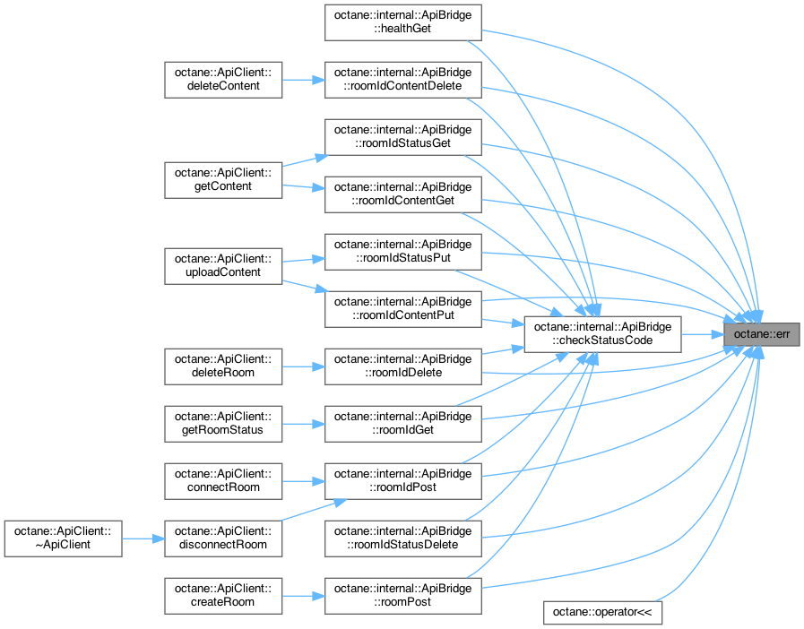

名前空間 | |
| namespace | internal |
クラス | |
| struct | _ |
| 何も返さないことを表す構造体。 [詳解] | |
| class | ApiClient |
| struct | Content |
getContentメソッドを呼んだ時の結果を表す構造体。 [詳解] | |
| struct | Device |
RoomStatusにおいてstd::vector<Device>の要素が取り得る値を表す列挙体。 [詳解] | |
| class | error_t |
| 準正常系のみを規定したいときに使えるユーティリティクラス。 [詳解] | |
| struct | ErrorResponse |
| エラーを表す汎用構造体。 [詳解] | |
| struct | HealthResult |
healthメソッドを呼んだ時の結果を表す構造体。 [詳解] | |
| class | ok_t |
| 正常系の型のみを規定したいときに使えるユーティリティクラス。 [詳解] | |
| class | Result |
| 正常系と準正常系で示す値を分岐させるラッパークラス。 [詳解] | |
| struct | RoomStatus |
getRoomStatusメソッドを呼んだ時の結果を表す構造体。 [詳解] | |
列挙型 | |
| enum struct | Health { Healthy , Degraded , Faulty } |
HealthResultにおいて、Healthの取り得る値を表す列挙体。 [詳解] | |
| enum struct | ContentType { File , Clipboard } |
Contentの型がファイルなのか、クリップボードなのかを表す列挙体。 [詳解] | |
関数 | |
| error_t< ErrorResponse > | makeError (std::string_view code, std::string_view reason) |
| エラーレスポンスを作成するためのユーティリティ関数。 [詳解] | |
| template<typename T_OK > | |
| decltype(auto) | ok (const T_OK &ok) |
| 正常系の値を構築するためのユーティリティ関数。 [詳解] | |
| template<typename T_OK > | |
| decltype(auto) | ok (T_OK &&ok) |
| 正常系の値を構築するためのユーティリティ関数。 [詳解] | |
| template<typename T_OK = _> | |
| ok_t< _ > | ok () |
正常系の型が_であるときに使用できるユーティリティ関数。 [詳解] | |
| template<typename T_Error , size_t N> | |
| decltype(auto) | error (const T_Error(&error)[N]) |
| 準正常系の値を構築するためのユーティリティ関数。 [詳解] | |
| template<typename T_Error > | |
| decltype(auto) | error (const T_Error &error) |
| 準正常系の値を構築するためのユーティリティ関数。 [詳解] | |
| template<typename T_Error > | |
| decltype(auto) | err (T_Error &&error) |
| 準正常系の値を構築するためのユーティリティ関数。 [詳解] | |
変数 | |
| constexpr auto | ERR_API_CLIENT_INITIALIZATION_FAILED = "ERR_API_CLIENT_INITIALIZATION_FAILED" |
ApiClientの初期化に失敗したときに使用される。 [詳解] | |
| constexpr auto | ERR_SERVER_HEALTH_STATUS_FAULTY = "ERR_SERVER_HEALTH_STATUS_FAULTY" |
| サーバに障害が発生し、正常に動作できないときに使用される。 [詳解] | |
| constexpr auto | ERR_CURL_INITIALIZATION_FAILED = "ERR_CURL_INITIALIZATION_FAILED" |
octane::internal::HttpClientなどでCURLの初期化に失敗したときに使用される。 [詳解] | |
| constexpr auto | ERR_INCORRECT_HTTP_METHOD = "ERR_INCORRECT_HTTP_METHOD" |
| 予期しないHTTPリクエストを発行したときに使用される。 [詳解] | |
| constexpr auto | ERR_CURL_CONNECTION_FAILED = "ERR_CURL_CONNECTION_FAILED" |
| CURLの処理に失敗したときに使用される。 [詳解] | |
| constexpr auto | ERR_JSON_PARSE_FAILED = "ERR_JSON_PARSE_FAILED" |
| JSONのパースに失敗したときに使用される。 [詳解] | |
| constexpr auto | ERR_INVALID_RESPONSE = "ERR_INVALID_RESPONSE" |
| APIサーバから予期しない応答があったときに使用される。 [詳解] | |
| constexpr auto | ERR_INVALID_REQUEST = "ERR_INVALID_REQUEST" |
| 予期しないリクエストを発行したときに使用される。 [詳解] | |
| constexpr auto | ERR_INVALID_STATUS_CODE = "ERR_INVALID_STATUS_CODE" |
| 予期しないステータスコードが返されたときに使用される。 [詳解] | |
列挙型詳解
◆ ContentType
|
strong |
◆ Health
|
strong |
HealthResultにおいて、Healthの取り得る値を表す列挙体。
| 列挙値 | |
|---|---|
| Healthy | サーバーが正常に動いている時の戻り値。 |
| Degraded | サーバーに障害が発生している時の戻り値。 |
| Faulty | サーバーが使用不能である時の戻り値。 |
関数詳解
◆ err()
template<typename T_Error >
| decltype(auto) octane::err | ( | T_Error && | error | ) |
準正常系の値を構築するためのユーティリティ関数。
例えばResultを返す関数で以下のように使用する。
SomeError someError;
return error(std::move(someError));
decltype(auto) error(const T_Error(&error)[N])
準正常系の値を構築するためのユーティリティ関数。
Definition: result.h:320
- テンプレート引数
-
T_Error 準正常系の型。
- 引数
-
[in] error 準正常系の値。
- 戻り値
- decltype(auto) 構築した準正常系を示すオブジェクト。
呼び出し関係図:

被呼び出し関係図:

◆ error() [1/2]
template<typename T_Error >
| decltype(auto) octane::error | ( | const T_Error & | error | ) |

◆ error() [2/2]
template<typename T_Error , size_t N>
| decltype(auto) octane::error | ( | const T_Error(&) | error[N] | ) |

◆ makeError()
| error_t< ErrorResponse > octane::makeError | ( | std::string_view | code, |
| std::string_view | reason | ||
| ) |
エラーレスポンスを作成するためのユーティリティ関数。
Result<T, ErrorResponse>という形式の戻り値をもつ関数で より楽にエラーを返すために作られた。
// 通常次のように記述しなければならないところ
.code = ERR_SOME_ERROR,
.reason = "Error!!!",
});
// 次のように記述できる
error_t< ErrorResponse > makeError(std::string_view code, std::string_view reason)
エラーレスポンスを作成するためのユーティリティ関数。
Definition: error_response.cpp:14
- 引数
-
[in] code エラーコード。 [in] reason エラーの説明。
- 戻り値
- error_t<ErrorResponse> エラーを表すオブジェクト。
呼び出し関係図:
被呼び出し関係図:

◆ ok() [1/3]
◆ ok() [2/3]
template<typename T_OK >
| decltype(auto) octane::ok | ( | const T_OK & | ok | ) |

◆ ok() [3/3]
template<typename T_OK >
| decltype(auto) octane::ok | ( | T_OK && | ok | ) |
変数詳解
◆ ERR_API_CLIENT_INITIALIZATION_FAILED
|
constexpr |
ApiClientの初期化に失敗したときに使用される。
◆ ERR_CURL_CONNECTION_FAILED
|
constexpr |
CURLの処理に失敗したときに使用される。
◆ ERR_CURL_INITIALIZATION_FAILED
|
constexpr |
octane::internal::HttpClientなどでCURLの初期化に失敗したときに使用される。
◆ ERR_INCORRECT_HTTP_METHOD
|
constexpr |
予期しないHTTPリクエストを発行したときに使用される。
◆ ERR_INVALID_REQUEST
|
constexpr |
予期しないリクエストを発行したときに使用される。
◆ ERR_INVALID_RESPONSE
|
constexpr |
APIサーバから予期しない応答があったときに使用される。
◆ ERR_INVALID_STATUS_CODE
|
constexpr |
予期しないステータスコードが返されたときに使用される。
◆ ERR_JSON_PARSE_FAILED
|
constexpr |
JSONのパースに失敗したときに使用される。
◆ ERR_SERVER_HEALTH_STATUS_FAULTY
|
constexpr |
サーバに障害が発生し、正常に動作できないときに使用される。